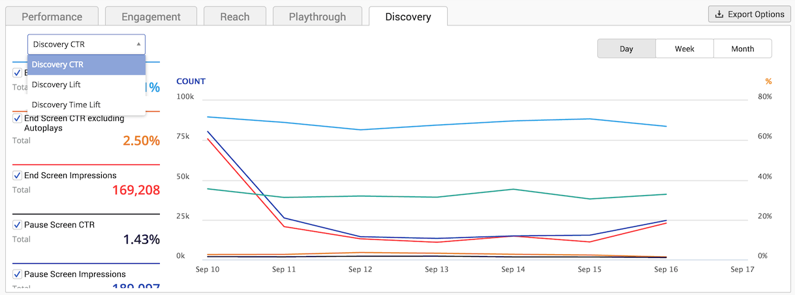
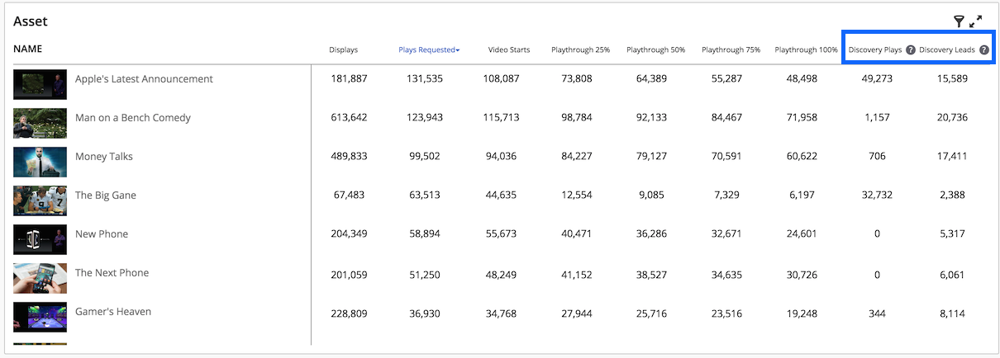

The Discovery tab highlights insights from Ooyala Discovery, such as clickthrough
rate, lift and time lift.
Note: Discovery recommendations must be enabled for your account
in order to see the
Discovery tab on the Business
Intelligence page. To enable this feature, log in to the
Ooyala Customer Portal and submit a ticket
requesting discovery.
The Discovery information is available with only the Player
filter applied or without any filters applied. If any other filters are used
(Country, Device, etc.), Discovery data will not be available. To view Discovery
data, deselect all filters except Player or deselect all filters.
You will continue to receive weekly Discovery Insights
reports via email with CSV attachments if you have them enabled. This new tab in Ooyala IQ displays the Discovery
metrics reported in the Discovery Insights reports. The
only report that is not represented in the IQ UI is the UI
CTR report, which reports the CTR for Discovery API usage
based on clicks and impressions coming through the Discovery Feedback Loop. Discovery metrics are queryable with the Ooyala IQ
API (see Metrics for details).
For details on how to export reports on the Business Intelligence page
as CSV files, see Exporting Business Intelligence Reports.
You can use the menu on the left of the graph to select which Discovery metrics to
view. The items in the legend on the left of the tab are color-coded to the lines on
the chart. To hide a metric from the chart, deselect the check box to the left of
the metric's name in the legend.

Note: Discovery Insights metrics are typically available in IQ within 1-2 hours after the end of the
day for each provider's timezone. Note that if you are viewing IQ for an Ooyala
master account that aggregates metrics for multiple sub-accounts, providers for whom
the day hasn't yet ended, per their timezone, will not see their numbers reflected
in the master account's Discovery Insights metrics.
Discovery Clickthrough Rate (CTR)
Discovery Clickthrough Rate (CTR)
measures the effectiveness of
Discovery recommendations by capturing how many times the
display of the
Discovery screen results in additional video plays.
Discovery CTR is
defined as the ratio of the number of clicks on
Discovery screens to the number of
impressions of
Discovery screens. For example, if the
Discovery screen is shown 100
times and a video was selected to play 53 times, a 53% CTR is recorded. For additional
details on what value you can derive from CTR data, see
Deriving Value From Discovery Insights.
Use the menu to select
Discovery CTR and view the following
data.
- End Screen CTR: The CTR of the Discovery end screen, including auto-plays.
'NA' indicates that there is insufficient data
available.
- End Screen CTR Excluding Autoplays: The CTR of the Discovery end screen, excluding auto-plays.
'NA' indicates that there is insufficient data
available.
- End Screen Impressions: The number of
impressions of the Discovery end screen. 'NA' indicates that there is insufficient data
available.
- Pause Screen CTR: The CTR of the Discovery pause screen. 'NA' indicates that there is insufficient data available.
- Pause Screen Impressions: The number of
impressions of the Discovery pause screen. 'NA' indicates that there is insufficient data
available.
- Aggregate CTR: The CTR covering impressions and
clicks of both the Discovery end screen and pause
screen.
Discovery Lift
The
Discovery Lift measures the growth in number of plays due to
Discovery.
Discovery Lift depends on how
users find videos on your site.
Discovery Lift is defined as the
total number of
Discovery plays expressed as a percentage of the
total number of organic plays. An organic play is a video having been played by the user
from any content carousel on the site except a
Discovery screen.
For example, if the number of organic plays is 100 and
Discovery
brought an additional 15 plays, that would be a
Discovery Lift
of 15%. For additional details on what value you can derive from
Discovery Lift data, see
Deriving Value From Discovery Insights.
Note: If you
are using more than one Ooyala player, views from players
that do not have Discovery enabled are still counted as
organic plays, resulting in a lower than actual aggregate lift.
Use the menu
to select
Discovery Lift and view the following lift data:
- Lift % From End Screen: The lift from
the Discovery end screen alone, including
auto-plays.
- Lift % From End Screen Excluding Autoplays: The lift from the Discovery end screen alone, excluding
auto-plays.
- Lift % From Pause Screen: The lift
from the Discovery pause screen.
- Aggregate Lift %: Total lift covering plays from
the Discovery end screen and pause screen.
Discovery Time Lift
The
Discovery Time Lift measures the growth in total
view time, due to
Discovery.
Discovery Time Lift can be considered a measure of growth
in session duration for the average user. Time Lift is defined as the total view time
from
Discovery plays expressed as a percentage of the total view time from organic
plays. For example, If the view time from the 100 organic plays in a week was 200
minutes and the view time from the 20
Discovery plays was 48 minutes, the
Discovery Time
Lift would be 48*100/200, or 24%. For additional details on what value you can derive
from
Discovery Time Lift data, see
Deriving Value From Discovery Insights.
Note: If you
are using more than one Ooyala player, views from players that do not have Discovery
enabled are still counted as organic plays, resulting in a lower than actual
aggregate time lift.
Use the menu to select
Discovery Time
Lift and view the following time lift data:
- Added View Time in Hours: The total added view time in hours attributed
to Discovery plays.
- Time Lift % from End Screen: The time lift from the Discovery end screen
alone, including auto-plays.
- Time Lift % from End Screen Excluding Autoplays: The time lift from the
Discovery end screen alone, excluding auto-plays.
- Time Lift % from Pause Screen: The time lift from the Discovery pause
screen.
- Aggregate Time Lift %: Total time lift covering plays from the Discovery
end screen and pause screen.
Discovery Plays and Discovery Leads
The Asset panel on the lower portion of the Business Intelligence page now displays
two new metrics: Discovery Plays and Discovery Leads.

Discovery plays and Discovery leads are available per asset in the catalog, and
measure how many times the video was played through Discovery and how many times
(when played organically) it led to a Discovery play.
Discovery Plays measure how many times a video was played after a
recommendation by Discovery.
Discovery Leads measure the number of times different Discovery-recommended
videos got played as a result of watching the original video. For example, the video
asset "The Big Game" has a Discovery end screen at the end of the video. Discovery
Leads measures the number of times a video shown on the Discovery end screen for
"The Big Game" get played. For additional details on what value you can derive from
Discovery Plays and Leads data, see Deriving Value From Discovery Insights.
You can sort by these two metrics and export this data as a CSV file by viewing the
expanded table of the Asset panel. You can also sort by these metrics and export
this data as a CSV file by viewing the expanded table of the Player panel. See Viewing Expanded Tables for details on how to view expanded tables for dimension panels.
About Time Segments
On the upper right of the chart is a series of
buttons you can use to change the granularity (the level of detail) of the displayed
data:
Discovery data is available for dates after March 12, 2015. The following time
segments are available: